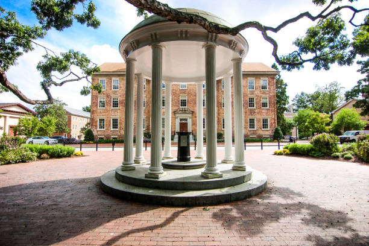

Our Mission

Creator: Ryan Herron, Credit: Getty Images
Here are a few ideas of acts of kindness to get you started! Bring any ideas you have to our monthly meetings or message us!
- Leave affirmations on empty desks in libraries
- Make motivational signs to put on lamp posts or in bathroom stalls
- Put uplifting notes in books in the library
- Write chalk messages on the bricks near Chase Dining Hall
- Make care packages for the homeless on Franklin St
- Compliment as many people as you can for a day
- Let someone go ahead of you in the line at the dining hall
- Write the bus drivers and custodial staff thank you notes